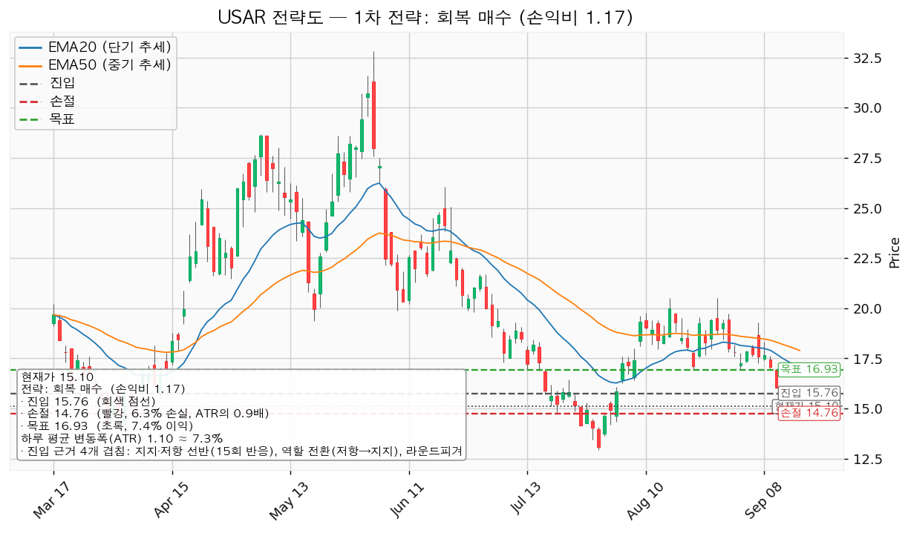
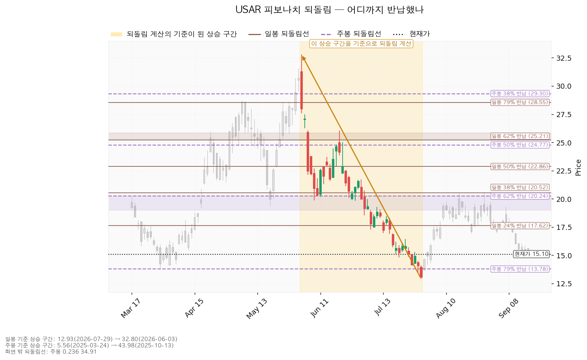
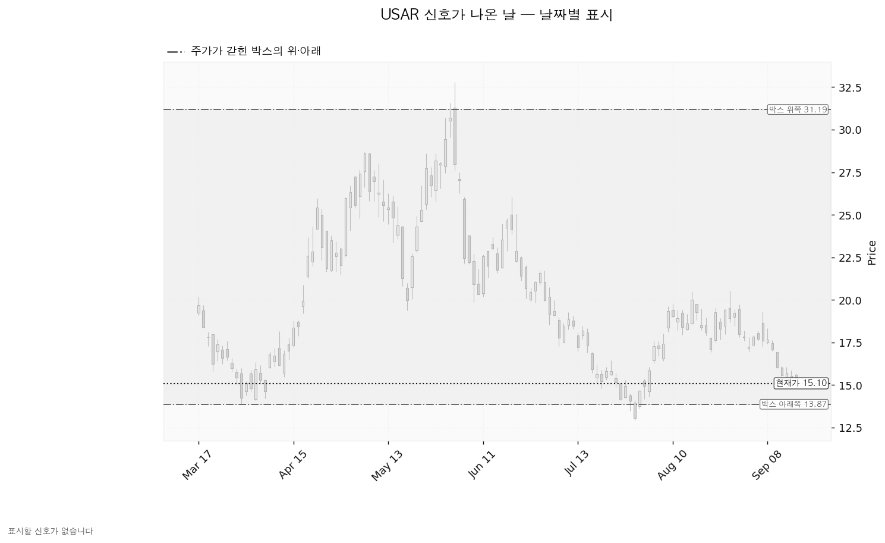
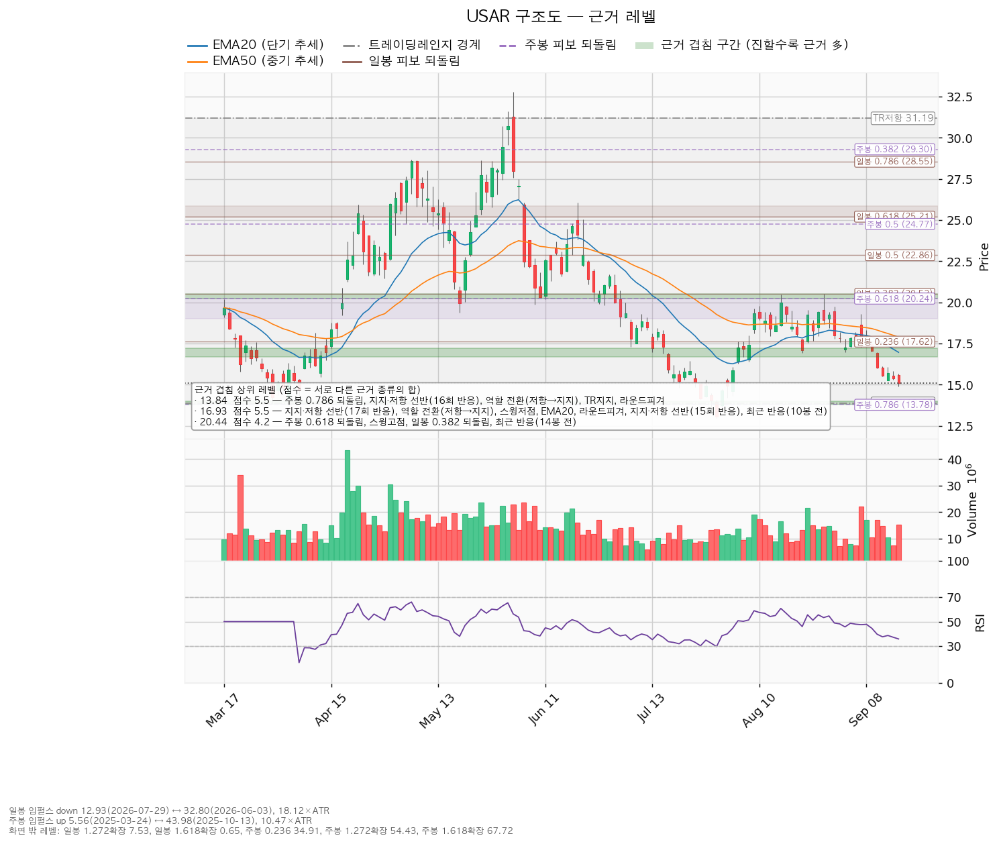

USA Rare Earth(USAR)는 미국 내에서 희토류 자석과 그 원료를 만드는 회사로, 텍사스 라운드톱 광산 개발과 오클라호마 자석 공장을 함께 추진하고 있습니다.
기준 종가는 2026-09-16의 15.10달러입니다.
| 구분 | 가격 | 판정 방식 | 현재 상태 | 현재가 대비 |
|---|---|---|---|---|
| 회복선 (진입 조건) | 15.76달러 | 일봉 종가 회복 + 되돌림에서 지지되는 것까지 확인되면 진입 | 회복 대기 | +4.37% |
| 집행 손절 | 14.76달러 | 종가·장중 구분 없이 닿으면 청산 — 15.76달러 진입이 성립한 경우에만 유효한 가격이며, 지금처럼 미진입 상태에서는 의미가 없습니다 | 미진입 | -2.25% |
| 관망 종료 기준 | 15.03달러 또는 2026-11-06 실적 | 일봉 종가가 아래로 마감하면 15.76달러 회복 시나리오를 접습니다 | 유지 중 — 9/16 저가 14.88로 장중은 아래를 봤고 종가 15.10으로 위에서 마감 | -0.45% |
| 확인선 (상승 확정) | 16.93달러 | 일봉 종가 돌파 후 되돌림 지지 | 미돌파 | +12.12% |
| 폐기선 (구조) | 13.87달러 | 이탈 후 3거래일 내 종가 회복 실패(또는 그 전에 12.77 아래 종가 마감) + 반등에서 저항 확인 — 하루 변동폭의 1.12배 거리 | 유지 중 | -8.15% |
미진입자가 실제로 매일 볼 선은 세 번째 줄입니다. 폐기선 13.87달러는 하루 변동폭의 1.12배 거리로 3배 안쪽이라 이번에는 구조 판정선으로도 실무에서 작동합니다 — 직전 리포트의 12.84달러(2.47배)보다 가까워졌습니다.
확인선 16.93달러는 이 셋업의 목표와 같은 가격입니다. 모순이 아니라 분기이며, 아래 「확인선과 목표의 관계」에서 다룹니다.
직전 리포트는 기준 종가 15.71달러에서 판정이 패스였고, 회복선 겸 진입 16.92 · 집행 손절 15.34 · 관망 종료 15.02 · 확인선 겸 목표 18.12 · 폐기선 12.84 · 2단계 경고선 15.76 · 1차 목표 17.48을 등록했습니다. 그 뒤 마감한 일봉은 둘입니다.
| 날짜 | 고가 | 저가 | 종가 | 판정 |
|---|---|---|---|---|
| 09-15 | 15.84 | 15.29 | 15.40 | 집행 손절 15.34에 장중 저가로 닿음. 2단계 경고선 15.76을 종가로 이탈 |
| 09-16 | 15.69 | 14.88 | 15.10 | 집행 손절 15.34 아래에서 마감. 관망 종료 15.02는 장중만 이탈, 종가로는 유지 |
직전의 패스 판정은 결과로도 맞았습니다. 기준가 15.71달러에서 지금 15.10달러로 -3.88%입니다.
| 항목 | 값 |
|---|---|
| 보유 수량 | 30주 (2026-08-03 매수, 기록 1건) |
| 평단 | 17.8847달러 |
| 현재가 | 15.10달러 |
| 평가손익 | -83.54달러 (-15.57%) |
| 평가금액 | 453.00달러 |
직전 리포트는 이 30주를 전량 정리하라고 적었고, 근거는 등록된 집행 손절 15.33달러에 9월 14일 저가 15.25달러가 닿은 것이었습니다. 장부에는 매도 기록이 없습니다. 팔지 않았다는 뜻일 수도, 보고하지 않았을 뿐일 수도 있으므로 체결을 지어 넣지 않고 사실만 적습니다.
직전 리포트 시점의 15.71달러에서 정리했다면 -65.24달러였고, 지금 15.10달러에서 정리하면 -83.54달러입니다. 차이는 18.30달러입니다.
| 항목 | 09-15 | 09-17 | 왜 움직였나 |
|---|---|---|---|
| 회복선·진입 | 16.92 | 15.76 | 현재가가 15.71 → 15.10으로 내려오면서 머리 위 첫 겹침 구간이 바뀌었습니다. 15.64~16.00 구간이 진입 후보가 되고, 16.93은 목표 자리로 밀려났습니다 |
| 집행 손절 | 15.34 | 14.76 | 근거 구간이 15.47~15.80 선반에서 15.03 선반으로 내려갔고, 그 바로 아래에 놓였습니다 |
| 목표·확인선 | 18.12 | 16.93 | 진입이 내려온 만큼 목표도 한 칸 내려왔습니다. 16.71~17.20 구간은 겹침 5.5점으로 직전 목표 자리(18.00~18.18, 4.3점)보다 두껍습니다 |
| 손익비 | 0.76 | 1.17 | 손실 폭 1.00달러, 이익 폭 1.17달러. 손절 폭이 하루 변동폭의 1.36배에서 0.91배로 좁아진 것이 개선분의 상당 부분입니다 |
| 관망 종료 | 15.02 | 15.03 | 같은 선반입니다. 다만 근거는 3.3점에서 2.2점으로 얇아졌습니다 — 라운드피겨 15와 최근 반응 가산점이 위쪽 15.64~16.00 구간으로 옮겨 붙었습니다 |
| 폐기선 | 12.84 | 13.87 | 박스 하단이 올라왔습니다. 13.78~14.00 구간은 겹침 5.5점(주봉 79% 되돌림·16회 반응 선반·역할 전환·박스 지지·라운드피겨 14)으로 직전 폐기선 구간(2.3점)보다 두껍습니다 |
| 하루 평균 변동폭 | 1.1621 | 1.0963 | 변동성이 또 줄었습니다 |
| 박스 안쪽 판정 | 판정 불가 | 중립 | 9월 16일 저가 14.88이 새 지지 테스트로 잡히면서 저점 흐름이 절상으로 판정됐습니다 |
| RSI(14) — 과열·침체 정도를 재는 지표, 50이 중립 | 38.64 | 35.79 | 중립 아래로 더 내려왔고 침체 기준선 30까지는 여유가 있습니다 |
직전은 신규 진입이 패스(손익비 0.76)였고, 이번은 조건 대기(손익비 1.17)입니다. 바뀐 이유는 가격이 내려오면서 진입 후보가 15.76달러로 내려왔고 그 위 16.93달러가 겹침 5.5점짜리 목표가 된 것입니다.
다만 개선의 성격을 그대로 적습니다. 손익비가 0.76에서 1.17로 올라간 데에는 목표 구간이 두꺼워진 것과 손절 폭이 1.36 ATR에서 0.91 ATR로 좁아진 것이 함께 들어 있습니다. 좁은 손절로 만든 손익비는 아래 「도구 적합성」에서 다시 봅니다.
보유분에 대한 결론은 직전과 같습니다 — 전량 정리입니다. 직전 리포트에 오류는 없었고, 달라진 것은 그 지시가 아직 장부에 반영되지 않았다는 사실입니다.
| 항목 | 값 | 의미 |
|---|---|---|
| 현재가(2026-09-16 종가) | 15.10달러 | 전일 15.40달러 대비 -1.95% |
| EMA20 (단기 흐름선) | 16.97달러 | 현재가가 -11.01% 아래 |
| EMA50 (중기 흐름선) | 17.89달러 | 현재가가 -15.61% 아래 — 역배열 |
| RSI(14) — 과열·침체 정도를 재는 지표, 50이 중립 | 35.79 | 중립 아래, 침체 기준선 30까지는 여유 |
| ATR (하루 평균 변동폭) | 1.0963달러 | 주가의 7.26% |
| 횡보 박스 | 13.87 ~ 31.19달러 (유효) | 폭 17.32달러 = 하루 변동폭의 15.80배 |
| 국면 | 횡보 레인지 — 하단 사수 조건부 | 추세 방향은 하락, 국면 후보는 하락 진행 |
박스 판정 근거: 조회된 일봉은 752봉이며 40·90·180봉 세 구간을 시험했습니다. 가격이 경계 안에 머문 비율은 40봉 0.750, 90봉 0.933, 180봉 0.978이고, 90봉은 방향성 편차가 커 유효 박스로 인정되지 않아 180봉이 채택됐습니다. 박스 경계를 그 구간의 반응 가격대로 그리므로 구간을 넓히면 이 비율은 올라가는 쪽으로 기웁니다. 폭이 하루 변동폭의 15.80배로 넓다는 점은 그대로입니다.
박스 안쪽에서 무슨 일이 있었나 — 중립: 지지 테스트는 6회입니다(2026-01-14 저가 15.732, 거래량 평균의 1.42배 → 01-16 16.05, 0.87배 → 03-30 13.865, 0.97배 → 07-29 12.93, 1.29배 → 08-06 16.42, 0.99배 → 09-16 14.88, 1.16배). 테스트 때 매도 거래량은 늘었다 줄었다 하는 혼조이고, 상승봉 대 하락봉 거래량비는 0.98로 매수 우위가 없습니다. 중립 판정의 유일한 근거는 박스 안 저점 절상입니다. 매집 우위로 서지 않았으므로 지지 확인 매수 셋업은 이번에도 산출되지 않았습니다.
가장 최근 테스트인 9월 16일의 거래량 1.16배는 직전 테스트(9월 14일 0.81배)보다 늘어난 값입니다. 매도가 줄어드는 흐름은 아직 관측되지 않았습니다.
직전 구간과의 관계: 이 박스 직전 180봉의 구간은 8.42~27.58달러로 지금 박스와 가격대가 겹칩니다. 위로 뚫고 올라온 것도 아래로 이탈한 것도 아닌 같은 횡보의 연장입니다.
| 시나리오 | 조건 | 구조 해석 | 행동 |
|---|---|---|---|
| 상승 전환 | 15.76 종가 회복·지지 → 16.93 종가 돌파 | 속임수 하락 확인 → 강세 신호 → 되돌림 지지 → 상승 국면 | 15.76 회복·지지 확인 후 진입(손익비 1.17). 16.93을 종가로 넘으면 그 위 구간은 새 셋업으로 다시 산출합니다 |
| 횡보 지속 | 13.87을 지키며 16.93 아래 박스 유지 | 구조는 유지되는 국면입니다. 매물 소화에 시간이 필요할 뿐 부정적 신호가 아닙니다 | 신규 진입 보류. 추적 항목 — ① 지지 테스트 매도 거래량 감소(현재: 혼조, 직전 테스트 1.16배) ② 저점 절상(현재: 절상) ③ 상승 시 거래량·캔들 폭 확대(현재: 거래량비 0.98) |
| 시나리오 폐기 | 13.87 이탈 후 3거래일 내 종가 회복 실패, 또는 그 전에 12.77 아래 종가 마감 + 반등에서 저항 확인 | 매집이 아니라 재분산 — 추가 저점 갱신 가능성을 엽니다 | 새 매도 절정과 새 박스가 만들어질 때까지 관망 |
세 갈래 중 지금 가장 두꺼운 것은 횡보 지속입니다. 박스 안 저점이 절상으로 판정된 것은 아래쪽 압력이 줄었다는 관측이지만, 상승봉 거래량 우위가 없어 위로 풀릴 근거는 아직 나오지 않았습니다.
엔진이 산출한 셋업은 1개입니다. 하락·중립 국면이라 눌림 매수나 돌파 매수는 나오지 않았고, 박스 안쪽이 매집 우위로 판정되지 않아 지지 확인 매수도 나오지 않았습니다.
| 항목 | 회복 매수 — 대표 셋업 |
|---|---|
| 엣지의 종류 | 모멘텀 (회복 확인형) |
| 전제 | 저항을 종가로 되찾으면 그 방향이 이어진다 |
| 구조 증명도 | 회복 확인형 (가중치 1.0) — 저항을 종가로 회복한 뒤에만 들어가므로 진입가는 불리하지만 구조가 먼저 증명됩니다 |
| 이 유형의 성격 | 자주 틀리고 소수가 크게 맞는 구조. 승률을 기대하는 셋업이 아닙니다 *(이 유형의 일반적 성격이며, 이 엔진에서 측정한 값이 아닙니다 — 백테스트 자료가 없습니다)* |
| 진입 | 15.76달러 (+4.37%, 하루 변동폭의 0.60배 거리) |
| 진입 근거 겹침 | 3.3점 / 4개 — 지지·저항 선반(15회 반응), 역할 전환(저항→지지), 라운드피겨 16, 최근 반응(39봉 전). 구간 15.64~16.00 |
| 집행 손절 | 14.76달러 — 근거 겹침 구간(15.03, 2.2점) 바로 아래. 손절 폭 -6.34%, 하루 변동폭의 0.91배 |
| 목표 | 16.93달러 (+7.42%, 하루 변동폭의 1.07배) — 겹침 5.5점 / 7개(선반 17회 반응, 역할 전환, 스윙저점, EMA20, 라운드피겨 17, 선반 15회 반응, 최근 반응 10봉 전). 구간 16.71~17.20 |
| 손익비 | 1 : 1.17 (손절 폭 0.91 ATR 기준) — 손실 폭 1.00달러, 이익 폭 1.17달러 |
| 비중 | 1회 손실 한도 계좌의 1% ÷ 손절 폭 6.34% = 계좌의 15.8%. 한 종목 상한 13%를 넘으므로 13%로 제한합니다 |
| 판정 | 조건 대기 — 손익비가 1을 넘겼습니다. 15.76달러 일봉 종가 회복 전에는 집행하지 않습니다 |
| 분할 청산 | 중간 레벨이 없어 분할 없이 단일 목표입니다 — T1 16.93달러에서 100% 청산이고 전 구간 손익비도 같은 1.17입니다. 본전 스탑으로 옮길 중간 지점이 없어 T1 체결 후 하한 손익비는 산출되지 않습니다 |
| 청산 규칙 | 목표 16.93달러에서 전량 청산. 트레일링은 걸지 않습니다 |

손절 폭과 손익비를 함께 읽습니다. 손절 14.76달러는 진입 아래 가장 가까운 겹침 구간(15.03) 바로 아래에 놓인 구조 손절이며, 이 엔진은 구조 손절 기준 손익비를 따로 내지 않습니다 — 여기서는 집행 손절이 곧 구조 손절이라 두 값이 1.17로 같습니다. 다만 그 구간의 근거는 2.2점으로 아래쪽에서 가장 두꺼운 13.78~14.00 구간(5.5점)보다 얇습니다. 손절이 얇은 지지에 기대고 있고 폭도 하루 변동폭보다 좁습니다.
진입 15.76달러에서 목표 16.93달러까지는 1.17달러, 하루 변동폭의 1.07배입니다. 2배 미만이므로 트레일링이나 다단 청산은 권하지 않습니다(2배라는 기준은 관행이며 정설은 아닙니다).
대표 셋업 선정 이유: 손익비 1.17 × 구조 증명도(회복 확인형) × 근거 겹침 3.3점으로 선정됐습니다. 산출된 셋업이 하나뿐이라 손익비 순위와 대표 셋업이 일치합니다.
집행 규칙: 진입 근거는 모멘텀(저항을 되찾으면 이어진다)이지만 집행은 레인지 규칙을 따릅니다 — 손절은 구조 아래, 목표 16.93달러에서 전량 청산이고 트레일링은 걸지 않습니다. 16.93달러 위 구간은 이 포지션을 끌고 가서 먹는 것이 아니라 새 셋업으로 다시 잡습니다.
현재가 15.10달러는 진입선보다 -4.19% 아래이므로 따라 살 자리가 아니며, 이번 셋업에 추격 진입 문제는 없습니다.
집행 정책상 계획은 하나입니다. 장부의 30주는 직전 리포트가 등록한 집행 손절 15.33달러에 닿았으므로 전량 정리이고, 그 판단은 이번에도 바뀌지 않습니다. 현재가 15.10달러에서 정리하면 -83.54달러(-15.57%)입니다.
이 30주와 위 셋업은 별개입니다. 위 셋업의 손절 14.76달러는 15.76달러에 새로 들어간 포지션에만 적용되며, 평단 17.8847달러짜리 보유분에 소급되지 않습니다.
평단에 매여 본전까지 기다리는 것은 손절 규칙과 충돌합니다. 본전이 되려면 현재가에서 +18.44%가 필요하고, 그 사이에는 15.76달러(겹침 3.3점)와 16.93달러(겹침 5.5점) 두 저항 구간이 놓여 있습니다. 회복선 15.76달러를 되찾더라도 이 보유분은 여전히 -11.88%입니다.
16.93달러는 이 셋업의 목표이면서 상승 확인선입니다. 그 가격에 닿는 것만으로는 아무 조치도 하지 않고, 그 자리에서 나오는 반응을 보고 결정합니다.
박스 상단 31.19달러는 근거가 박스 경계 하나뿐(겹침 1.2점)이라 확인선으로 쓰지 않고 그 위의 맥락으로만 둡니다.
가격을 한 번 내준 것은 폐기가 아닙니다. 셋업 무효화의 기준선은 진입선인 15.76달러입니다.
① 관찰: 일봉 종가가 15.76달러 아래로 마감 → 구조 이탈이 시작된 것이지만 되돌아 올라오면 속임수 하락일 수 있어 아직 무효가 아닙니다. 신규 진입만 중단하고 집행 손절은 그대로 둡니다. ② 경고: 이탈 후 3거래일 안에 15.76달러를 종가로 회복하지 못함, 또는 그 전에 일봉 종가가 14.66달러 아래로 마감(하루 평균 변동폭의 1배만큼 더 밀림) — 둘 중 먼저 오는 쪽. 잔여 비중을 줄이고 반등에서의 반응을 확인합니다. ③ 무효: 반등이 15.76달러에서 막히고 그 아래로 되밀림(지지가 저항으로 전환) → 셋업 폐기.
이 셋업은 15.76달러를 종가로 회복한 뒤에 들어가는 구조이므로, 위 3단계는 진입이 성립한 다음부터 적용됩니다. 지금은 진입 전이라 어느 단계에도 들어가 있지 않고 상태는 회복 대기입니다. 참고로 현재가 15.10달러는 9월 11일 종가 15.56달러부터 15.76달러 아래에 머물러 있고, 14.66달러 아래 종가 마감은 아직 나오지 않았습니다.
집행 손절 14.76달러는 위 판정이 몇 단계에 있든 무관하게 별도로 작동하며, 장중 일시 이탈은 어느 단계에도 해당하지 않습니다. 시나리오 폐기선 13.87달러는 이 셋업 무효화와 다른 가격이며, 박스 해석 자체를 접는 자리입니다.
| 기준 | 구간 | 방향 | 주요 되돌림선 |
|---|---|---|---|
| 일봉 | 32.80달러(2026-06-03) → 12.93달러(2026-07-29) | 하락 | 24% 17.62 / 38% 20.52 / 50% 22.86 / 62% 25.21 / 79% 28.55 |
| 주봉 | 5.56달러(2025-03-24) → 43.98달러(2025-10-13) | 상승 | 24% 34.91 / 38% 29.30 / 50% 24.77 / 62% 20.24 / 79% 13.78 |
현재가 15.10달러는 일봉 하락분의 24% 되돌림(17.62달러) 아래에 있습니다. 6~7월 하락분 가운데 4분의 1도 되돌리지 못한 자리입니다. 주봉으로 보면 2025년 3월부터의 상승분 중 62%를 반납한 지점(20.24달러)과 79%를 반납한 지점(13.78달러) 사이에 있고, 아래쪽 13.78달러는 16회 반응한 선반·역할 전환·박스 지지·라운드피겨 14와 겹쳐 겹침 5.5점 구간을 이룹니다. 현재가에서 -8.32%이며, 이 구간이 곧 폐기선 13.87달러가 놓인 자리입니다.
일봉·주봉 되돌림 모두 정상 산출됐습니다.

이번 조회 구간에서 Wyckoff 이벤트(속임수 하락·속임수 상승·강세 신호·약세 신호)는 하나도 잡히지 않았습니다. 박스는 유효하게 판정됐고 계산도 정상적으로 끝났으므로 판정 보류가 아니라 실제로 표시할 신호일이 없다는 뜻이며, 아래 차트가 회색 일색인 것은 그 때문입니다.
박스 하단 13.87달러 근처에서 매도 절정에 이은 속임수 하락이 나오지 않았고, 상단에서 강세 신호도 없었습니다. 9월 16일의 저가 14.88달러는 박스 하단에서 1.01달러 위 자리라 속임수 하락으로 잡히지 않았고, 박스 안쪽 지지 테스트로만 계산에 들어갔습니다. 국면 후보는 하락 진행이며, 근거는 하락 추세·EMA 역배열·기울기 음의 세 가지입니다.

점수는 서로 다른 근거 종류의 가중치 합입니다. 같은 종류가 여러 개 붙어도 한 번만 더해집니다.
| 가격 | 구간 | 점수 | 근거 | 현재가 기준 |
|---|---|---|---|---|
| 16.93 | 16.71~17.20 | 5.5 | 선반(17회 반응), 역할 전환(저항→지지), 스윙저점 2개, EMA20, 라운드피겨 17, 선반(15회 반응), 최근 반응(10봉 전) | 위 — 확인선·목표 |
| 13.84 | 13.78~14.00 | 5.5 | 주봉 79% 되돌림, 선반(16회 반응), 역할 전환, 박스 지지, 라운드피겨 14 | 아래 — 폐기선 구간 |
| 20.44 | 20.24~20.52 | 4.2 | 주봉 62% 되돌림, 스윙고점 2개, 일봉 38% 되돌림, 최근 반응(14봉 전) | 위 — 확정 후 새 셋업의 목표 후보 |
| 15.76 | 15.64~16.00 | 3.3 | 선반(15회 반응), 역할 전환, 라운드피겨 16, 최근 반응(39봉 전) | 위 — 회복선·진입 |
| 17.84 | 17.62~18.00 | 3.1 | 일봉 24% 되돌림, EMA50, 라운드피겨 18, 최근 반응(24봉 전) | 위 |
| 18.18 | — | 2.7 | 선반(13회 반응), 역할 전환, 최근 반응(24봉 전) | 위 |
| 12.97 | 12.93~13.00 | 2.3 | 스윙저점, 라운드피겨 13, 최근 반응(34봉 전) | 아래 |
| 15.03 | — | 2.2 | 선반(16회 반응), 역할 전환 | 아래 — 관망 종료 기준·손절의 근거 |
| 19.63 | 19.37~19.89 | 1.7 | 스윙저점 2개, 최근 반응(7봉 전) | 위 |
| 31.19 | — | 1.2 | 박스 상단, 그것 하나 | 위 — 맥락일 뿐 확인선 아님 |
현재가 15.10달러는 15.03 선반(2.2점) 바로 위에 있습니다. 아래로 근거가 두꺼워지는 다음 자리는 13.84달러(5.5점)이고, 15.03과 13.84 사이 1.19달러 구간에는 12.97(2.3점) 말고 받칠 만한 겹침 구간이 없습니다 — 15.03을 종가로 잃으면 13.84까지 하루 변동폭의 1.09배가 비어 있습니다. 위쪽으로는 15.76달러(3.3점)와 16.93달러(5.5점)가 순서대로 놓여 있습니다.

| 구분 | 값 |
|---|---|
| 후행 주당순이익 | -2.69달러 (적자) — 후행 PER은 산출되지 않습니다 |
| 예상 주당순이익 (당해) | -0.57달러 (적자, 최저 -0.78 / 최고 -0.41). 적자 폭 전년 대비 30.5% 축소 |
| 예상 주당순이익 (다음 해) | +0.03달러 (흑자 전환, 최저 -1.32 / 최고 +1.07) |
| 선행 PER | 503.3배 |
후행은 적자라 배수가 없고, 선행 503.3배는 분모인 다음 해 이익 추정이 0.03달러로 0에 가까워서 나온 값입니다(직전 리포트의 523.7배에서 내려온 것은 가격이 빠진 결과입니다). 이 종목은 배수로 비싸다·싸다를 판정할 수 있는 단계가 아닙니다. 볼 수 있는 것은 적자가 줄어드는 속도입니다 — 후행 -2.69달러 → 당해 -0.57달러 → 다음 해 +0.03달러가 컨센서스의 그림입니다. 다음 해 추정의 범위는 최저 -1.32달러에서 최고 +1.07달러까지 벌어져 있어, 흑자 전환 여부 자체가 아직 합의되지 않았습니다.
애널리스트 9명, 투자의견 strong_buy.
| 구분 | 목표주가 | 현재가 대비 |
|---|---|---|
| 최저 | 21.00달러 | +39.1% |
| 평균 | 35.56달러 | +135.5% |
| 최고 | 45.00달러 | +198.0% |
현재가 15.10달러는 애널리스트 9명 전원의 목표 가운데 가장 낮은 21.00달러보다도 아래입니다. 최저 목표 21.00달러조차 차트에서 실행 가능한 목표 16.93달러 위에 있습니다. 시계가 다릅니다 — 컨센서스는 12개월, 이 셋업은 수 주입니다.
| 예상 주당순이익 | 90일 전 | 30일 전 | 현재 |
|---|---|---|---|
| 당해 연도 | -0.553달러 | -0.553달러 | -0.570달러 |
| 다음 연도 | +0.033달러 | +0.030달러 | +0.030달러 |
두 추정치 모두 90일간 나빠지는 방향으로 움직였습니다. 당해 연도는 적자가 -0.553에서 -0.570으로 3.0% 깊어졌고, 다음 연도는 +0.033에서 +0.030으로 -10.0% 내렸습니다. 추정치가 가격과 같은 방향으로 내려온 경우이며, 추정치가 오르는 동안 가격만 빠지는 배수 수축에는 해당하지 않습니다.
하향 폭과 가격 하락 폭의 크기는 다릅니다. 90일 추정치 하향은 한 자릿수인데 가격은 6월 3일 고점 32.80달러 대비 -53.96%입니다. 추정치 하향이 방향은 설명하지만 크기는 설명하지 못하며, 나머지는 흑자 전환 시점에 대한 시장의 기대가 바뀐 부분입니다.
결산 기준일 2025-12-31 기준입니다.
| 항목 | 값 |
|---|---|
| 영업활동 현금흐름 | -4,899만 달러 (음수) |
| 잉여현금흐름 | -8,634만 달러 |
| 설비투자 (최근) | 3,736만 달러 |
| 설비투자 (직전) | 311만 달러 |
| 설비투자 증가율 | +1,102.4% |
성격을 갈라 보면, 영업 단계에서 이미 4,899만 달러가 나가고 있고 거기에 설비투자 3,736만 달러가 더해져 잉여현금흐름 적자 8,634만 달러가 만들어졌습니다. 영업은 흑자인데 설비투자가 앞선 경우와는 다릅니다. 설비투자를 열 배 넘게 늘린 것은 자석 공장·광산 개발 단계로 보면 설명되지만, 자기 이익으로 감당할 수 없는 구조이므로 추가 자금 조달이 필요하고 그 형태에 따라 기존 주주 지분이 희석될 수 있습니다. 세 수치는 서로 맞아떨어집니다(-4,899만 - 3,736만 = -8,634만).
다음 해 예상 주당순이익 0.03달러를 기준으로 내재 배수를 계산하면 이렇습니다.
| 기준 | 주가 | 내재 배수 (다음 해 EPS 0.03달러 기준) |
|---|---|---|
| 현재가 | 15.10달러 | 503.3배 |
| 최저 목표 | 21.00달러 | 700.0배 |
| 평균 목표 | 35.56달러 | 1,185.2배 |
평균 목표까지의 +135.5% 가운데 이익 증가로 설명되는 부분은 없습니다. 다음 해 이익 추정 자체가 0.03달러이므로, 목표주가는 그 이익이 아니라 광산·자석 공장 자산과 프로젝트 진행 속도에 값을 매긴 것입니다. 컨센서스를 따르는 것은 프로젝트 일정에 거는 쪽이며, 이 리포트의 수 주짜리 셋업과는 성격이 다릅니다.
| 층위 | 판정 | 근거 |
|---|---|---|
| 실적 기준 | 주도주 아님 | 당해 적자, 다음 해 추정 +0.03달러로 손익분기 부근이며 범위는 -1.32~+1.07, 추정치는 90일간 하향, 영업현금흐름 음수 |
| 가격 기준 | 주도주 아님 | 2026-06-03 고점 32.80달러 대비 -53.96%, EMA20·EMA50 아래 역배열 |
두 층위가 같은 방향입니다. 희토류·소재 섹터 전체가 함께 눌린 것인지 이 종목만 뒤처진 것인지는 이번 분석에 섹터 강도 자료가 포함되지 않아 확정할 수 없으며, 시황 분석과 대조해야 합니다.
| 날짜 | 이벤트 | 그때 볼 수치 |
|---|---|---|
| 2026-11-06 | 분기 실적 발표 | 당해 주당순이익(컨센서스 -0.57, 최저 -0.78), 영업활동 현금흐름(직전 -4,899만 달러), 설비투자 집행 속도, 자금 조달 계획 |
날짜가 있는 확인 이벤트는 11월 6일 실적 하나입니다.
가격 폐기선 13.87달러와 별개로, 11월 6일 실적에서 아래 중 둘 이상이 확인되면 가격과 무관하게 판단을 접고 관심 종목에서 뺍니다.
1. 당해 연도 주당순이익이 컨센서스 최저 -0.78달러보다 나쁨 2. 영업활동 현금흐름 유출이 -4,899만 달러보다 확대 3. 시가총액의 10%를 넘는 희석성 자금 조달 발표 4. 다음 해 주당순이익 컨센서스가 +0.03달러에서 적자로 되돌아감
| 항목 | 값 |
|---|---|
| 1회 매매 손실 한도 | 계좌의 1% |
| 손절 폭 | -6.34% (진입 15.76 → 손절 14.76) |
| 계산된 포지션 크기 | 1% ÷ 6.34% = 계좌의 15.8% |
| 한 종목 상한 | 계좌의 13% — 상한을 넘으므로 13%로 제한합니다. 이 경우 손절 체결 시 손실은 계좌의 0.82%로 한도 안쪽입니다 |
왜 조건 대기인가: 손익비 1.17은 1을 넘겼지만, 진입 조건인 15.76달러 일봉 종가 회복이 아직 나오지 않았습니다. 현재가 15.10달러에서 미리 사는 것은 이 셋업이 아닙니다 — 이 셋업의 전제는 저항을 종가로 되찾는 것을 본 뒤에 들어가는 것이고, 그 전에 사면 손절 14.76달러까지의 거리만 짧아지고 진입 근거는 없습니다.
보유분: 등록된 집행 손절에 닿았으므로 30주는 전량 정리이며, 현재가 기준 평가손실은 -83.54달러(-15.57%)입니다. 매도 기록이 장부에 없으므로 집행 여부는 확인이 필요합니다.
기본 시계는 수 주입니다. 위 컨센서스는 12개월 기준이므로 이 판정과 층위가 다르며, 답은 진입 15.76 · 손절 14.76 · 목표 16.93으로 냅니다.
하루 평균 변동폭이 주가의 7.26%인 종목입니다. 이 셋업의 손절 폭은 6.34%(하루 변동폭의 0.91배)로 하루 변동폭보다 좁습니다. 논지가 맞아도 특별한 사건 없이 하루짜리 등락만으로 체결될 수 있다는 뜻입니다. 직전 리포트의 셋업은 손절 폭이 1.36 ATR이었고, 이번에 손익비가 0.76에서 1.17로 올라간 데에는 이 손절 조임이 들어 있습니다.
계좌 상한 13%는 이 사정과 맞물려 있습니다. 좁은 손절로 계산된 15.8%를 그대로 실으면 손절 폭 자체가 하루 변동폭 안쪽이라 잦은 체결로 손실이 쌓입니다. 13% 제한을 적용하고, 진입은 15.76달러 일봉 종가 회복을 본 뒤에만 집행합니다 — 장중 회복은 진입 조건이 아닙니다.
*본 자료는 정보 제공 목적이며 투자 권유가 아닙니다. 투자 판단과 그 결과에 대한 책임은 투자자 본인에게 있습니다.*